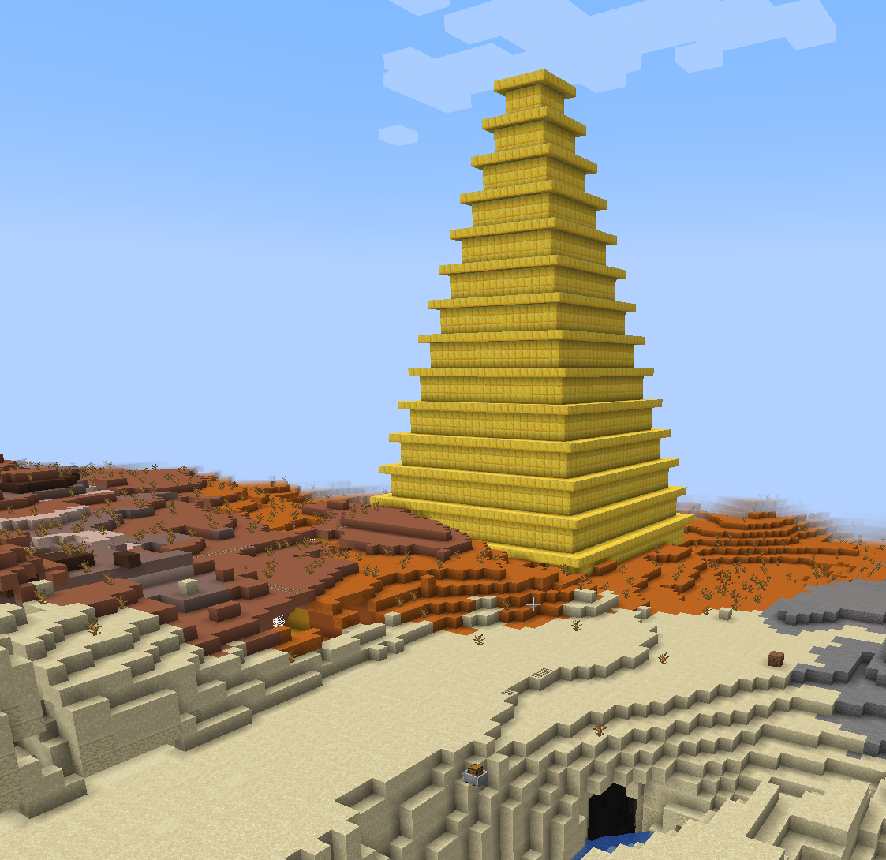

Functions#
Introduction#
In this tutorial we are going to start to create a few buildings for our village. We will expand on the types of buildings in later tutorials as we learn new features of Python.
Warning
Before starting it is worth making a backup of your world. We will be creating lost of test buildings and it would be good to be able to reset back to the original state. See Backups of mciwb-server.
To do this we will learn to use functions to packaged up our code into reusable chunks. In the next tutorial will also learn to save our code in Python modules so that we don’t need to do typing or pasting code all of the time.
Simple Function#
A function is a named block of code with some parameters and a return value. Parameters are variables that are set by the code that calls the function. The return value is passed back to the calling code.
Try typing (or pasting) this very simple function
def age(birth_year, current_year=2022):
calculated_age = current_year - birth_year
return calculated_age
When you hit enter after typing the function definition above nothing appears to happen. But you have created a function which you can now call like this:
my_age = age(1964)
print(my_age)
If you substitute your own birth_year value this function will print your age at the end of the year 2022.
age(1964) calls the function defined above and passes 1964 for the
value of birth_year. It does not pass a value for the parameter
current_year. The default value for current_year was set to 2022.
The function performs a - subtraction operation, taking the value of
current_year and subtracting the value of birth_year. The result
is assigned into calculated_age with =.
The function uses return to pass the value of calculated_age back to
the caller. Our caller assigns the returned value to a variable called
my_age and prints it out.
Now if you don’t want to use the default of 2022 (when this tutorial was
written) you can pass your own value for current_year. e.g. to find
out how old you were when the first Apple Mac was released:
print(age(1964, current_year=1984))
20
Obviously if unlike me, you were born after 1984 you would get a negative result.
Variable Naming#
Notice the use of _ in the variable names. This is used to separate words
in the variable name. Typically variable names are lowercase with words separated
by underscores. It is also legal to use uppercase letters and numbers in variable
names (but a number must not be the first character).
Pagoda Function#
Lets create a function that will create a pagoda. This function will have the following parameters that the caller can supply:
pos- the position of center of the base of the pagodawidth- the width of the pagoda’s base (defaults to 4)floor_height- the height of each floor (defaults to 4)item- what blocks to use (defaults to gold block)
For now we are just going to have some fun making pagodas. In the next tutorial we will look into the detail of how this function works.
Try copying and pasting this function into your Python console.
def build_pagoda(pos, width=4, floor_height=4, item: Item = Item.GOLD_BLOCK):
"""
Create a pagoda out of blocks at the given position.
Each successive floor is narrower and each has a balcony at the top.
:param pos: position of the base of the pagoda
:param width: width of the base of the pagoda
:param floor_height: height of each floor
:param item: block to use for the base of the pagoda
"""
c = get_client()
# calculate how many levels we can make if we reduce width by 2 each level
levels = width // 2
for level in range(levels):
# calculate the width of the pagoda for this level
floor_width = width - 2 * level
# calculate the base position of the walls for this level
base = pos + Direction.UP * level * floor_height
# calculate the position of the balcony for this level
# it should surround the top layer of the walls for this level
balcony = base + Direction.UP * (floor_height - 1)
# create the balcony for this level
polygon(
client=c,
center=balcony,
height=1,
diameter=floor_width + 2,
sides=4,
item=item,
mode=FillMode.REPLACE,
)
# create the walls for this level
polygon(
client=c,
center=base,
height=floor_height,
diameter=floor_width,
sides=4,
item=item,
mode=FillMode.REPLACE,
)
Now type in the following code in iPython to call your build_pagoda
function:
pagoda_pos=Vec3(585,71,-1728)
build_pagoda(pagoda_pos, width=30)
If your player then looks to the North from our spawn point you should see this:
{kind=link}
The pagoda_pos I chose is deliberately a little outside of our main village
area. This is so that the massive building does not overshadow the village too
much!
- Exercise:
You could now do a backup of the world and experiment with building pagodas of different sizes and materials. Then restore your world after you are done experimenting.
For the position of your pagodas you can always use world.player.pos
in which case the
pagoda will build around your player. But now might also be a good time to
learn about discovering coordinates in the world. See Discovering the Coordinates of a Block